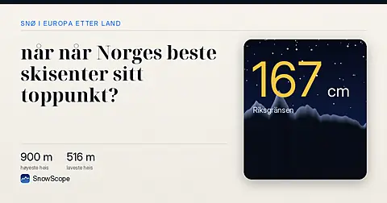
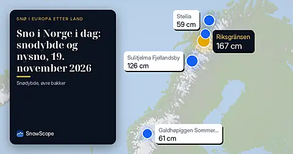

Riksgränsen og Björkliden: 9 cm ved grensen, lang ventetid på heisene (14. november 2026)
Vinterns første snø har nådd det fjerne nord, men de to skistadene ved svensk-norsk grense forblir stengt. Værstasjonen ved Katterjåkk nær Riksgränsen målte 9 cm 13. november, mens Abisko nær Björkliden holdt bare 2 cm. Begge åpner i februar når dagslyset kommer tilbake, ikke fordi snøen ankommer.
Se snøprognosen for Riksgränsen direkte i SnowScope-appenSnødybde, puddervarsler og 3D-kartet, gratis.

Hvilke stasjoner målte denne uken
En enkelt storm mellom 10. og 13. november brakte første reelle snøfall. Katterjåkk hoppet fra bar mark til 10 cm 10. november, deretter sunket litt til 9 cm innen 13. november. Den manuelle stasjonen i nærheten registrerte 14 cm 12. november, noe som tyder på noen variasjon over korte avstander. Abisko, som ligger i regnskyggen 30 km østover, kom aldri over 2 cm.
Denne forskjellen gjenspeiler geografien. Riksgränsen strekker seg over hovedvannskillet der atlantisk fuktighet treffer høydedragene først. Når luften når Björkliden og Abisko-dalen lengre øst, har det meste av fuktigheten allerede falt som snø på svensk side.

November er vanligvis dypere
Riksgränsens 46-årsrekord viser typisk dybde på 46 cm på grunnivå og 65 cm på toppen innen midten av november. Innen midten av desember stiger disse tallene til 81 cm og 99 cm. Nå, med 9 cm og anslått 12 cm høyere opp, ligger skistedet godt under sesonggjennomsnitt.
Björkliden er tørrere selv i et normalt år: typisk 28 cm på grunnivå og 56 cm på toppen nå. Dens 2 cm måling passer det mønsteret med lettere snødekke på østlige bakker.
Hva kommer videre: snø og kulde
I løpet av de neste sju dagene viser prognosene cirka 11 cm som ankommer Riksgränsens grunnivå og 9 cm på toppen; Björkliden vil motta omtrent 7 cm på grunnivå og 8 cm på toppen. Andre prognoser varierer mellom 6 og 19 cm, så usikkerhet gjenstår. Det gode: temperaturer holder seg godt under frysepunktet helt ned i dalene, så regn er ikke en trussel.
Vinterstabilitet over tiår
Ingen av skistadene har sett nedgang i maksimal snødybde over 46-årsrekorden. Riksgränsens mediantopp på toppen var 221 cm i de første 15 vintrene av datasettet og 224 cm i de siste 15 vintrene—stabil. Björkliden viser lignende konsistens: 168 cm og 165 cm henholdsvis. Begge topper oppstår i april, måneder unna.
Hvorfor heisene åpner i februar, ikke november
Riksgränsens sesong går fra 18. februar til 23. mai; Björkliden fra 4. februar til 2. mai. Timingen er ikke bestemt av snødybde, men av dagslys. Ved 68° nord bringer november og desember kontinuerlig mørke eller bare skumring. Skiere kan ikke se terrenget eller nyte det. I slutten av februar klatrer solen over horisonten i økende timer hver dag, noe som gjør en skikjøring mulig og verdt det.
Dette er ikke unikt for høye nord. Mange arktiske og subarktiske skisteder stenger midtvinter ikke på grunn av mangel på snø, men på grunn av mangel på lys. Når solen kommer tilbake, vil Riksgränsen nesten helt sikkert ha mer enn en meter på toppen—nok til å skiste.
Tips til skiløpere
- Planlegger du en vinterkjøring eller nordlysobservasjon i løpet av neste måned? Forvent tynt snødekke og svært begrenset dagslys. Snøen selv er trygg nok på merkede stier, men mørkheten er den virkelige begrensningen.
- Hvis du vandrer på åpent fjell nær Katterjåkk eller Abisko, hold deg på merkede ruter. Selv lett snø kan skjule snøskredvarselterreng; sjekk offisiell snøskredvarsel fra Lavinprognoser (SE) / Varsom (NO) før du går off-piste.
- E10 fjellveien mellom Sverige og Norge stenger i tungt snøfall eller stormer. Sjekk alltid gjeldende veiforhold og vær før du krysser grensen.
- 46-årsklimarekordet bekrefter at innen april bærer begge skisteder typisk godt over 1 500 m på høyde. Hvis du kan vente på dagslyset, vil snøen være der.
Om tallene
Snødybdene for skistedene er det dypeste snødekket i de øvre bakkene på datoen som vises; de er anslag for et område, ikke en måling i ett punkt. Prognoser kan endre seg. Les alltid det offisielle snøskredvarselet før du kjører utenfor preparert løype.
Offisielle snøskredvarsler: Lavinprognoser (SE) / Varsom (NO)
Siter denne rapporten
For forskning, undervisning eller presse: tallene og diagrammene kan brukes fritt under CC BY 4.0 med denne kildehenvisningen.
SnowScope (2026), Riksgränsen og Björkliden: 9 cm ved grensen, lang ventetid på heisene (14. november 2026), https://snowscope.app/blog/nb/2026/11/riksgransen-bjorkliden-snow-report-14-november-2026.html, hentet 2026-11-14
SnowScope (Atlas Labs). (2026, November 14). Riksgränsen og Björkliden: 9 cm ved grensen, lang ventetid på heisene (14. november 2026). SnowScope snow reports. https://snowscope.app/blog/nb/2026/11/riksgransen-bjorkliden-snow-report-14-november-2026.html
BibTeX
@misc{snowscope2026riksgransenbjorklidensno,
author = {{SnowScope (Atlas Labs)}},
title = {Riksgränsen og Björkliden: 9 cm ved grensen, lang ventetid på heisene (14. november 2026)},
year = {2026},
month = nov,
howpublished = {\url{https://snowscope.app/blog/nb/2026/11/riksgransen-bjorkliden-snow-report-14-november-2026.html}},
note = {Published 2026-11-14 16:49 UTC; accessed 2026-11-14}
}· CC BY 4.0 · Metoder, data og verktøy →
Riksgränsen: snø og temperatur etter høyde, i vinter sammenlignet med i fjor (verktøy) →
Følg Riksgränsen
Gratis: en melding når nysnø er på vei, og prognosen hver morgen.
Flere snørapporter

Riksgränsen har 167 cm i dag. De neste sju dagene: opptil 26 cm mulig.

19. november har 142 norske skisteder snø på øvre bakker. Riksgränsen leder med 167 cm; 89% av høyden er hvit.

Riksgränsen holder 54 cm 22. november, tett opp mot de typiske 63 cm for denne datoen. Snø dekker 94% av Norges fjell.